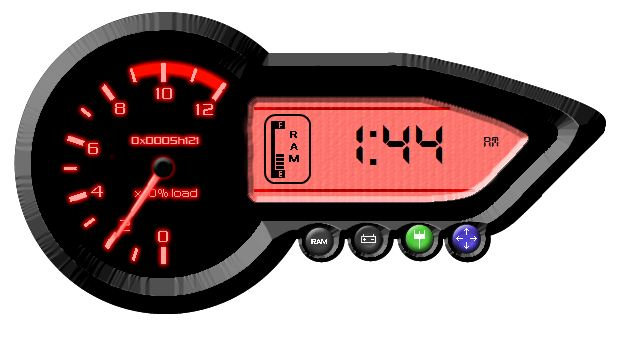
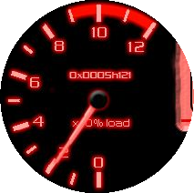
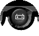
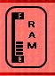
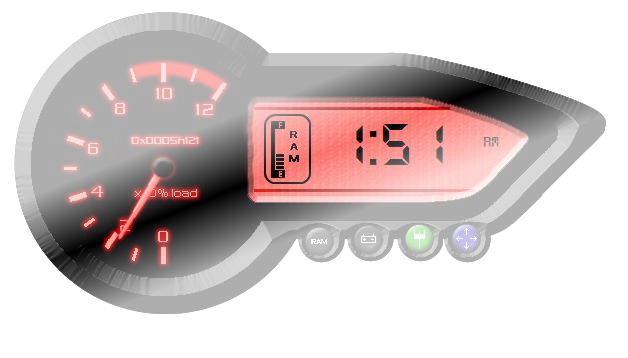

Shrikant Sonone presents
Dedicated to all BAJAJ pulsar fans

Features
- Cpu Moniter

- On board clock
- Battery Indicater

- Ram Meter

- Adjustable Opacity

Notes & Tips
- Options are form taskbar
*** Any bugs and Modificaton can be sent at shrikantsonone@gmail.com
***